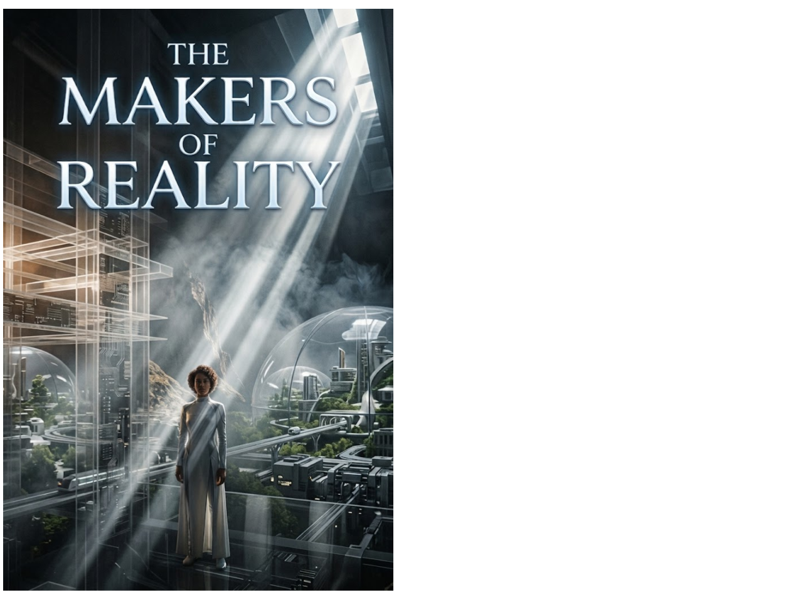

Science Fiction Literature · Axiologic Research Editions
The Makers of Reality
A Novel
When survival no longer has a price, who gets to decide which possible world becomes real?
The difficult part begins after abundance
Money does not disappear in a speech. It stops working when contradictory claims prevent real things from reaching real needs. During the crisis, MIRA—a coordination system built for infrastructure rather than government—keeps hospitals, grids and transport alive by treating ownership as unresolved metadata and physical requirements as operative constraints.
The emergency succeeds. Basic sufficiency becomes universal, production becomes largely automated and accumulated wealth loses its power over survival. Yet the world still contains singular places, scarce skills, irreversible choices and incompatible futures. Abundance solves the price of living; it does not solve the politics of becoming.
Another way to become rich
What are eidons? They are non-transferable records of public contribution. They cannot buy food, homes or treatment, but they can be burned to add weight to a difficult civic choice.
Where does the system fracture? Influence gathers around people with large eidon holdings even before a vote begins. A mechanism designed to recognise service slowly becomes a new architecture of status and authorship.
Can a future remain democratic? Lea Varga, MIRA and a society divided over Cassian Roe must build institutions able to revise themselves before public value hardens into permanent rank.
No one could spend eidons on comfort. They could spend them on reality.
Scarcity after money
The Makers of Reality is a post-scarcity novel that refuses to confuse material sufficiency with political innocence. Across cities, shadow markets and contested civic systems, it asks how power returns after its oldest symbols have been dismantled—and whether a civilization can make consequential choices without manufacturing another class of people entitled to make them for everyone else.